Las teclas muestran glifos Aurebesh y lo que escribes se envía en letras normales, así cualquiera puede leerlo. Autocorrector, deslizar para escribir, emojis con búsqueda, portapapeles con imágenes, teclado dividido para Fold y un panel de inteligencia que funciona sin internet.
⬇️ Descargar APKTeclado Aurebesh 2.2.1 · 1,5 MB · Android 8.0+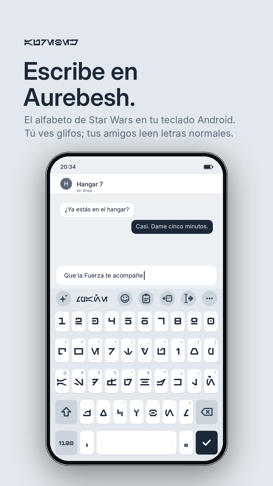
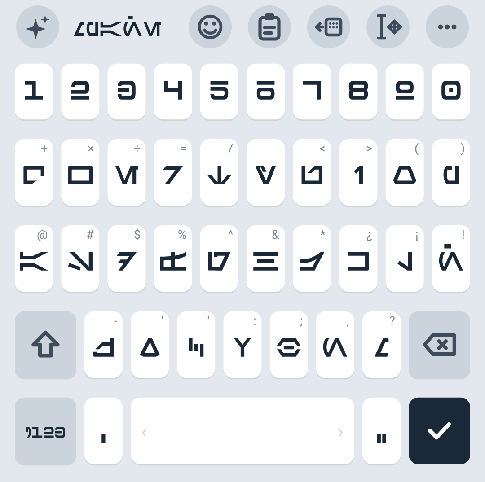
✦ inteligencia a la izquierda; emojis, portapapeles y modo a una mano a la derecha; ajustes en ?123.
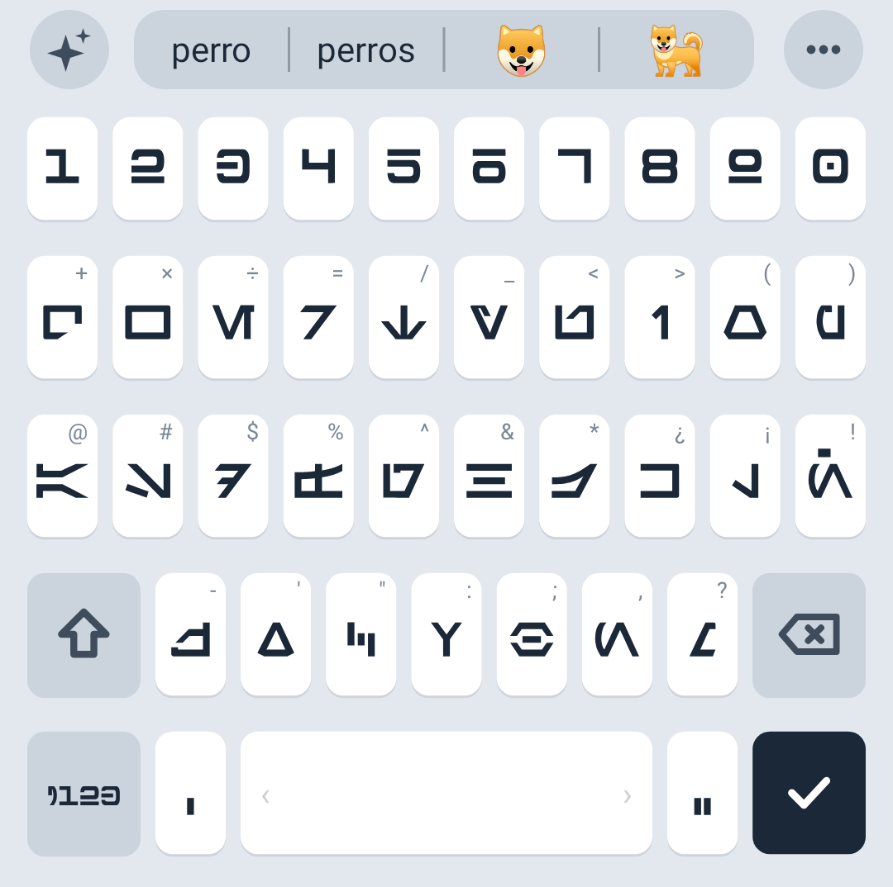
Corrige uno o dos errores, restaura tildes, completa palabras, predice la siguiente y sugiere el emoji de lo que escribes.
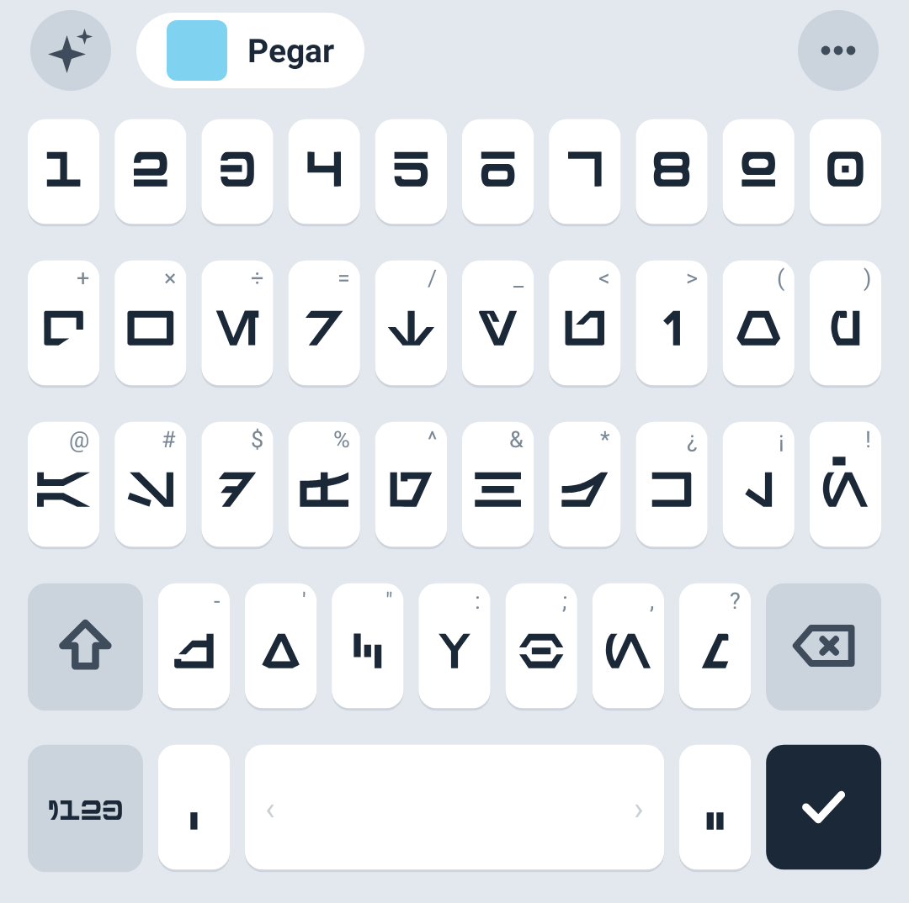
Lo que acabas de copiar, incluida una captura de pantalla reciente, aparece listo para pegar y desaparece al escribir.
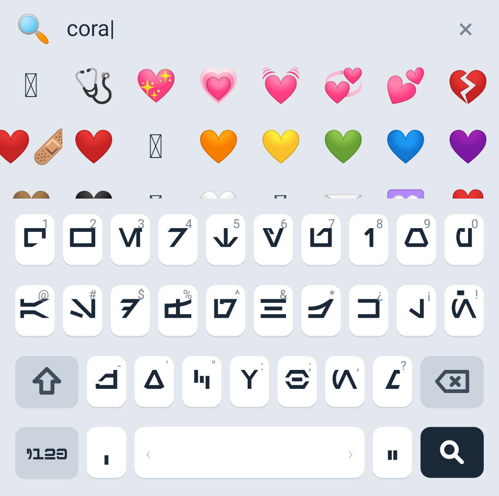
Grupos y subgrupos oficiales de Unicode, recientes y búsqueda tolerante a errores en español e inglés.
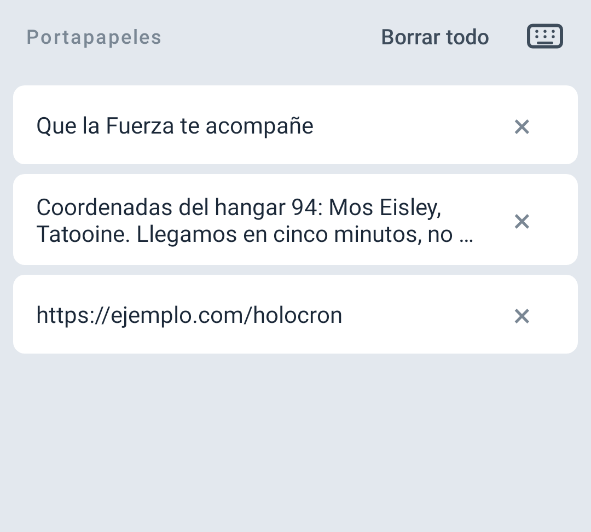
Historial de texto e imágenes; pega solo el número, el correo o el enlace con un toque.
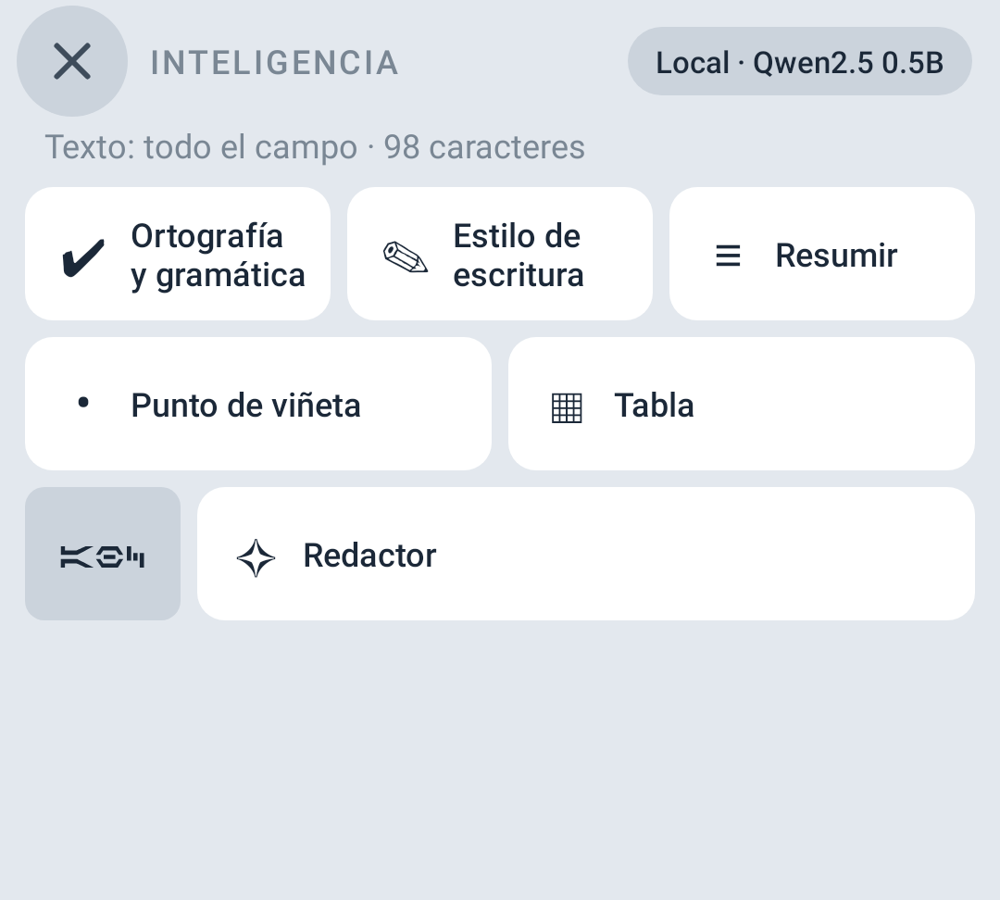
Ortografía, estilo con tonos, resumir, viñetas, tabla y redactor, con un modelo en tu teléfono o tu propio servidor.
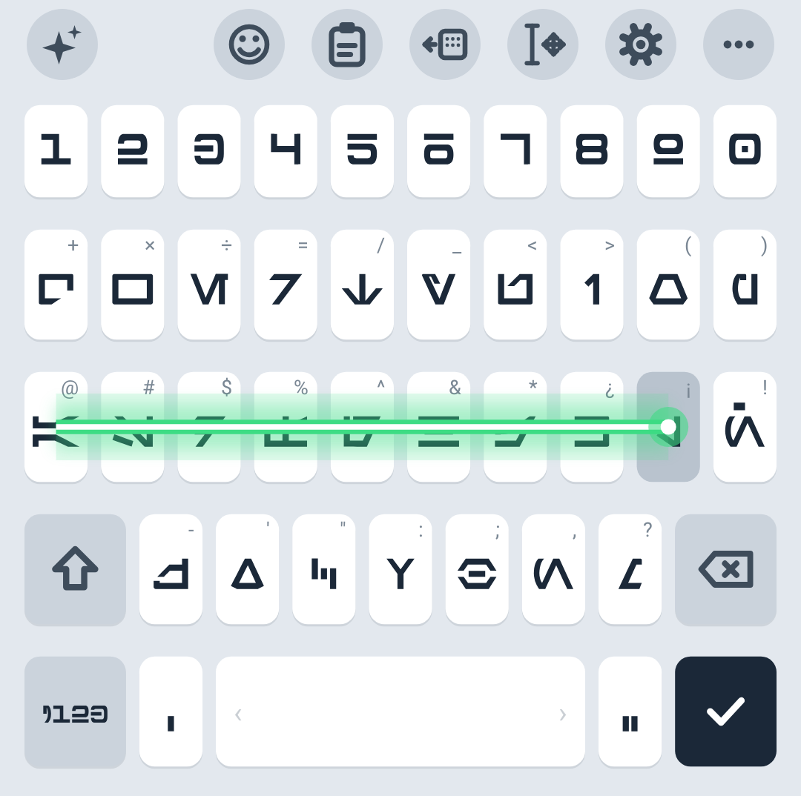
Al deslizar para escribir, una hoja continua con núcleo blanco y halo en seis colores: azul, verde, amarillo, bronce, morado y rojo.
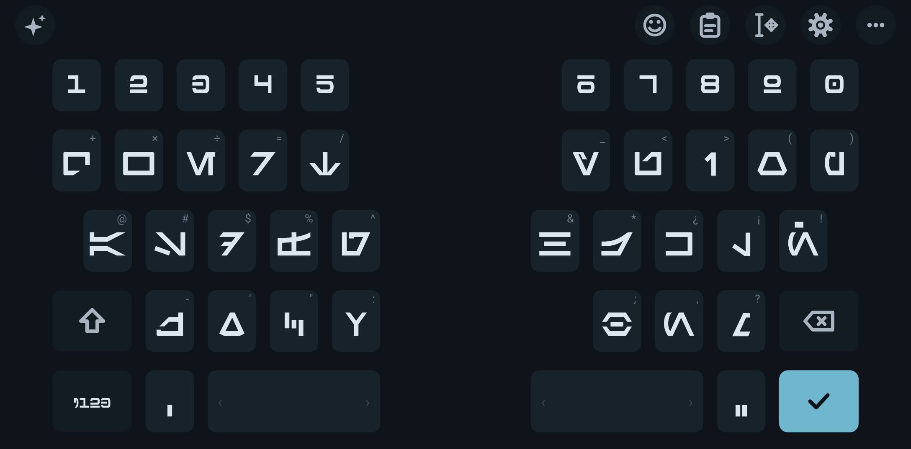
Al desplegar, dos mitades con la misma geometría que Samsung Keyboard (filas escalonadas, dos espacios); se puede desactivar en Ajustes › Diseño (Plegables · Galaxy Z Fold en pantallas anchas).
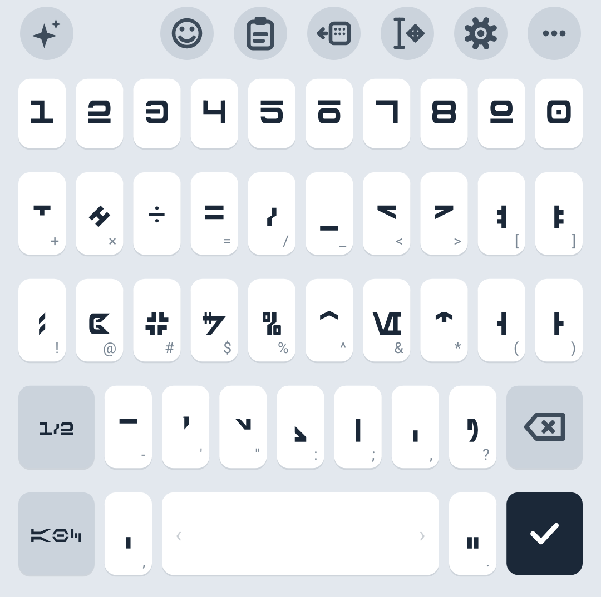
Misma distribución de signos; la página 2/3 añade dígrafos Aurebesh, ¿ ¡ « » y más símbolos, y la 3/3 todas las letras con acento (à â ä ç ö ô ü ß…).
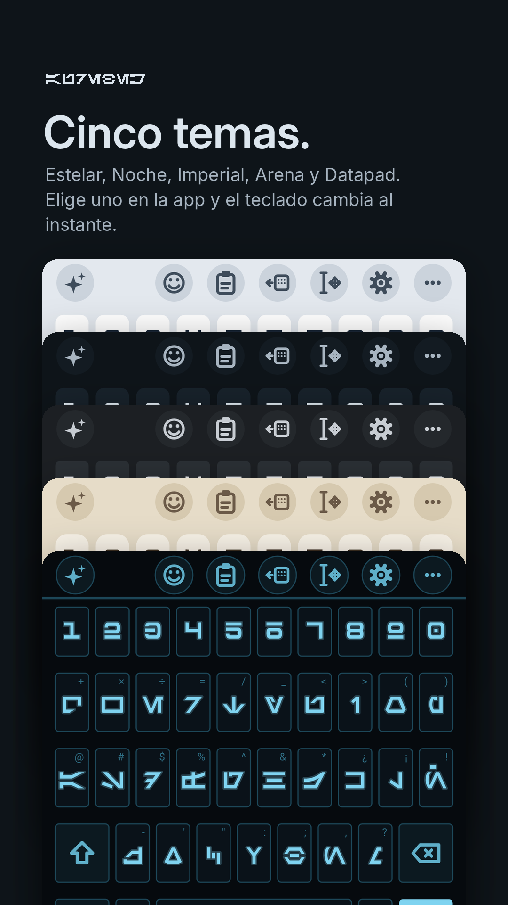
Estelar, Noche, Datapad, Imperial y Arena. Español, inglés y alemán (QWERTZ), con deslizar para escribir en todos.
| Función | Samsung Keyboard | Teclado Aurebesh 2.0 |
|---|---|---|
| Galaxy AI / Inteligencia avanzada | Sí | Inteligencia local o servidor propio |
| Deslizar para escribir | Sí | Sí |
| Emojis | Sí | Sí, con búsqueda y sugerencias |
| Portapapeles con historial | Sí | Sí, texto e imágenes |
| Capturas sugeridas | Sí | Sí (permiso de fotos opcional) |
| Modo a una mano | Sí | Sí |
| Teclado dividido (Fold) | Sí | Sí |
| Teclado flotante | Sí | No |
| Dictado por voz | Sí | No |
| Alfabeto Aurebesh | No | Sí |
No recopila nada: sin analítica, sin registros, sin cuentas. Internet se usa solo para dos cosas que tú inicias: descargar un modelo de inteligencia o hablar con tu propio servidor. El historial del portapapeles, las palabras y pares que aprende, los modelos y el sonido personalizado se quedan en el teléfono y se borran desde Ajustes. La copia de seguridad de Android está desactivada para la app.
Un motor escrito en Java puro ejecuta un modelo pequeño de pesos abiertos (por defecto Qwen2.5-0.5B-Instruct, unos 350 MB, licencia Apache-2.0) dentro del teléfono. Se descarga de Hugging Face solo cuando tocas Descargar en Ajustes › Inteligencia, o importas un archivo GGUF. Es lento: unos pocos tokens por segundo, un párrafo puede tardar entre 20 y 60 segundos. Si quieres velocidad, indica un servidor compatible con OpenAI en tu ordenador (Ollama, LM Studio, llama.cpp). La app recomienda un modelo según tu Galaxy y su RAM, y el botón Probar comprueba que funciona y mide la velocidad. Considéralo experimental.
No, y no depende del teclado: One UI reserva la pantalla exterior del Z Flip para Samsung Keyboard y no permite teclados de terceros ahí (tampoco Gboard). No existe ninguna declaración que una app pueda añadir para habilitarlo. En la pantalla interior funciona todo, con filas compactas si la ventana es baja.
Galaxy AI corre en el NPU del teléfono con modelos y API privados de Samsung que un teclado de terceros no puede usar. Aquí el motor es Java puro dentro de la app: en la 2.0 reutiliza la parte fija del prompt (caché de prefijo), usa hasta seis hilos y ofrece un modelo más ligero (SmolLM2 135M), pero sigue siendo más lento. Para velocidad real, apunta a tu propio servidor (Ollama, LM Studio) en tu computadora.
Con 12 GB o más (Galaxy S26 Ultra, S26+, S26, S25 Ultra, S25+, S25, Z Fold 8/7/6, Z Flip 8/7/6) cualquiera de la lista; Q8_0 o Qwen3 0.6B si prefieres calidad. Con 8 GB (S24, S23, A56, A55) Qwen2.5 0.5B Q4_0. Con 6 GB o menos (A3x, A2x, A1x) Q4_0 va lento: SmolLM2 360M (solo inglés) o un servidor propio.
Se desarrolló y probó en Samsung Galaxy con One UI 9.0. Debería instalarse en cualquier Android 8.0 o superior, pero fuera de ese entorno está sujeto a fallos y la app muestra un aviso.
Galaxy AI es exclusivo de Samsung Keyboard y no se puede integrar en otros teclados. Sigue disponible en el menú de selección de texto de Android mientras usas Teclado Aurebesh. A cambio, el panel ✦ ofrece las mismas acciones con un modelo local o tu servidor.
Solo si activas "Sugerir capturas": lee únicamente la carpeta Screenshots para ofrecerte la última captura como chip "Pegar". Puedes no activarlo nunca.
Sí: todo el código, las herramientas para generar los datos y las pruebas están en GitHub. La fuente Aurebesh es de SilvinoR (OFL 1.1), las listas de palabras de FrequencyWords (MIT), los bigramas de corpus abiertos (CC BY-SA 4.0) y los emojis de Unicode y CLDR.
The keys show Aurebesh glyphs and what you type is sent as normal letters, so anyone can read it. Autocorrect, glide typing, emoji with search, a clipboard with images, a split layout for the Fold and an intelligence panel that works offline.
⬇️ Download APKAurebesh Keyboard 2.2.1 · 1.5 MB · Android 8.0+✦ intelligence at the left; emoji, clipboard and one-handed mode at the right; settings on ?123.
Fixes one or two mistakes, restores accents, completes words, predicts the next one and suggests the emoji for what you type.
Whatever you just copied, including a recent screenshot, is ready to paste and goes away as soon as you type.
Official Unicode groups and subgroups, recents and typo-tolerant search in Spanish and English.
History of text and images; paste only the number, the email or the link with one tap.
Spelling, writing style with tones, summary, bullets, table and composer, with a model on your phone or your own server.
While glide typing, a continuous blade with a white core and glow in six colors: blue, green, yellow, bronze, purple and red.
Two halves with a central gap and two space bars when the screen is unfolded; also as an option.
Same symbol layout; the 2/3 page adds Aurebesh digraphs, ¿ ¡ « » and more symbols, and 3/3 shows every accented letter (à â ä ç ö ô ü ß…).
Stellar, Night, Datapad, Imperial and Sand. Spanish, English and German (QWERTZ), with glide typing in all of them.
| Feature | Samsung Keyboard | Aurebesh Keyboard 2.0 |
|---|---|---|
| Galaxy AI / Advanced intelligence | Yes | Local intelligence or your own server |
| Glide typing | Yes | Yes |
| Emoji | Yes | Yes, with search and suggestions |
| Clipboard history | Yes | Yes, text and images |
| Screenshot suggestions | Yes | Yes (optional photos permission) |
| One-handed mode | Yes | Yes |
| Split keyboard (Fold) | Yes | Yes |
| Floating keyboard | Yes | No |
| Voice dictation | Yes | No |
| Aurebesh alphabet | No | Yes |
It collects nothing: no analytics, no logs, no accounts. The internet is used only for two things you start yourself: downloading an intelligence model or talking to your own server. The clipboard history, the words and word pairs it learns, the models and the custom sound stay on the phone and can be deleted from Settings. Android backup is disabled for the app.
A pure-Java engine runs a small open-weights model (by default Qwen2.5-0.5B-Instruct, about 350 MB, Apache-2.0) inside the phone. It is downloaded from Hugging Face only when you tap Download in Settings › Intelligence, or you import a GGUF file. It is slow: a few tokens per second, a paragraph can take 20 to 60 seconds. For speed, point it at an OpenAI-compatible server on your computer (Ollama, LM Studio, llama.cpp). The engine was verified numerically against a reference implementation, but not yet with a real model on a phone: treat it as experimental.
It was built and tested on Samsung Galaxy with One UI 9.0. It should install on any Android 8.0 or newer, but outside that environment it may fail and the app shows a warning.
Galaxy AI is exclusive to Samsung Keyboard and cannot be embedded in other keyboards. It stays available in Android's text-selection menu while you use Aurebesh Keyboard. The ✦ panel offers the same actions with a local model or your server instead.
Only if you turn on "Suggest screenshots": it reads just the Screenshots folder to offer the latest capture as a "Paste" chip. You can leave it off forever.
Yes: all the code, the data-building tools and the tests are on GitHub. The Aurebesh font is by SilvinoR (OFL 1.1), the word lists come from FrequencyWords (MIT), the bigrams from open corpora (CC BY-SA 4.0) and the emoji from Unicode and CLDR.